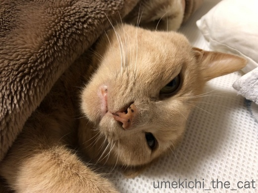
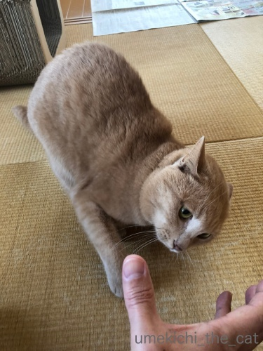

掃除機が許せなくなる時 [梅吉]
昨夜、今朝は肌寒かったので暖房を使ってしまった我が家ですが
そろそろ厚手の冬物をしまい始めております。

あまり収納スペースの無い家なので毛布はこんな風に掃除機を使って圧縮して
しまっているのですが作業がなかなかはかどりません。
みなさんご想像通り梅吉さんが熱心にお手伝いをしてくださるのが理由なのですが
そのお手伝いがですね、ちょっとすごいのですよ・・・・・
（21秒です）
![[猫]](https://blog.ss-blog.jp/_images_e/101.gif) そうじき！ゆるすまじ！！
そうじき！ゆるすまじ！！
・・・・・・(^▽^;)
普通に掃除機を使ってる分には絡んでくることは無いのですが
圧縮袋の吸い口を吸い始めるとこの勢い。
ちゃんと空気を抜くのが難しいです(-_-メ)
お昼寝爆睡中にこっそりしようと思っても飛び起きて駆けつけてくるし。
掃除機と圧縮袋のコラボの何がそんなに気に触るのでしょうねー。
お手伝いに精を出した後は日向でお昼寝。

季節が変わっておうちに入り込んでくる日差しの角度も変わってきました。
今時期は食卓テーブルの上にひざ掛けを置いてお休みどころにしています＾＾
 ↑ガブッと一押し↑
↑ガブッと一押し↑
そろそろ厚手の冬物をしまい始めております。

あまり収納スペースの無い家なので毛布はこんな風に掃除機を使って圧縮して
しまっているのですが作業がなかなかはかどりません。
みなさんご想像通り梅吉さんが熱心にお手伝いをしてくださるのが理由なのですが
そのお手伝いがですね、ちょっとすごいのですよ・・・・・
（21秒です）
・・・・・・(^▽^;)
普通に掃除機を使ってる分には絡んでくることは無いのですが
圧縮袋の吸い口を吸い始めるとこの勢い。
ちゃんと空気を抜くのが難しいです(-_-メ)
お昼寝爆睡中にこっそりしようと思っても飛び起きて駆けつけてくるし。
掃除機と圧縮袋のコラボの何がそんなに気に触るのでしょうねー。
お手伝いに精を出した後は日向でお昼寝。

季節が変わっておうちに入り込んでくる日差しの角度も変わってきました。
今時期は食卓テーブルの上にひざ掛けを置いてお休みどころにしています＾＾
「おひざ」と「だっこ」の違いは？ [梅吉]
朝、ストレッチ中のおっとに詰め寄る梅吉さん。


わしの おひざすぺーす つくってやー

場所を変えておひざゲット！
トイレに立とうとしたり無理にどけようとするとがぶっときます(^▽^;)
おひざはこんなに好きなのに・・・・・

（おっとの）だっこは好きじゃないみたい(*>艸<)
すごい顔だねー！

おなじすごい顔でも

これは楽しそう(≧▽≦)
抱き方の加減なんでしょうか。
私のだっこには30秒〜１分くらいならおとなしくしてます。
お膝はどちらでも延々と気の済むまでなんですけどw
↑ガブッと一押し↑


場所を変えておひざゲット！
トイレに立とうとしたり無理にどけようとするとがぶっときます(^▽^;)
おひざはこんなに好きなのに・・・・・

（おっとの）だっこは好きじゃないみたい(*>艸<)
すごい顔だねー！

おなじすごい顔でも

これは楽しそう(≧▽≦)
抱き方の加減なんでしょうか。
私のだっこには30秒〜１分くらいならおとなしくしてます。
お膝はどちらでも延々と気の済むまでなんですけどw
桜の季節の終わりに [梅吉]
我が家は４連休だったのですっかりブログ活をサボっておりました。
暖かくなるとあちこち出かけたい気持ちがうずうずですもの＾＾
関西地区は街中の桜が散り始めとなりましたがうちのベランダ盆栽の桜は今が咲き始め。

御殿場桜ですって。
モデルさんに登場をお願いしましたが気が乗らないのか
なかなかポーズを決めてくれません。

しょうがないのでモデルさんが動き回るあたりに下僕が桜を移動させますよ。
あ、目線は良いのですけどしっぽが切れてるーw
背景もゴチャゴチャだし下僕１、２が窓ガラスに映っちゃってます。

ゴロンとしたあたりにすかさず桜を移動。
おお！これは目線はもらえていませんがなかなか良い感じではないですか＾＾
これを今季の梅吉＆桜のベストショットといたします。
あっち向いてる視線は「明日を見据える瞳」ということでm(_ _)m

我が家の近所のなんちゃって隅田川にもお花見に行きました。
ここは周辺の桜よりも遅めに満開するのでちょうど見頃。

人も少ない穴場のスポット。
この先も静かにお花見できるといいなぁ。

別の日。こちらは大にぎわいだった万博公園。
桜吹雪の中、お外ランチをしてきました。
でも、ここへはお花見に来たのではないのですよ！！
↑ガブッと一押し↑
暖かくなるとあちこち出かけたい気持ちがうずうずですもの＾＾
関西地区は街中の桜が散り始めとなりましたがうちのベランダ盆栽の桜は今が咲き始め。

御殿場桜ですって。
モデルさんに登場をお願いしましたが気が乗らないのか
なかなかポーズを決めてくれません。

しょうがないのでモデルさんが動き回るあたりに下僕が桜を移動させますよ。
あ、目線は良いのですけどしっぽが切れてるーw
背景もゴチャゴチャだし下僕１、２が窓ガラスに映っちゃってます。

ゴロンとしたあたりにすかさず桜を移動。
おお！これは目線はもらえていませんがなかなか良い感じではないですか＾＾
これを今季の梅吉＆桜のベストショットといたします。
あっち向いてる視線は「明日を見据える瞳」ということでm(_ _)m

我が家の近所のなんちゃって隅田川にもお花見に行きました。
ここは周辺の桜よりも遅めに満開するのでちょうど見頃。

人も少ない穴場のスポット。
この先も静かにお花見できるといいなぁ。

別の日。こちらは大にぎわいだった万博公園。
桜吹雪の中、お外ランチをしてきました。
でも、ここへはお花見に来たのではないのですよ！！
なぜなら、そこに水があるから [梅吉]
飽きるのこのない「とってこい遊び」。

初めは元気に遊んでいますが時間とともに勢いも衰えて来て・・・
（６秒です）
ゴール！ゴーール！！ゴーーーーーーール！！！
お水に入れちゃいます(^▽^;)
ちょっと一休みのつもりか
もう わし やめたい
（おとーさんが楽しそうなので 悪いと思っているw)
と思っているのか・・・・・
不思議行動の多い猫様ですがなぜ水に入れちゃうんだろう。
（ちょっと長くて26秒です）
かと思うとこんなことしてみたり。
（7秒です）
フェイントかけられちゃったり (;^ω^)
ホント、どんなこと考えて遊んでいるのか聞いてみたいですwww
↑ガブッと一押し↑

初めは元気に遊んでいますが時間とともに勢いも衰えて来て・・・
（６秒です）
ゴール！ゴーール！！ゴーーーーーーール！！！
お水に入れちゃいます(^▽^;)
ちょっと一休みのつもりか
（おとーさんが楽しそうなので 悪いと思っているw)
と思っているのか・・・・・
不思議行動の多い猫様ですがなぜ水に入れちゃうんだろう。
（ちょっと長くて26秒です）
かと思うとこんなことしてみたり。
（7秒です）
フェイントかけられちゃったり (;^ω^)
ホント、どんなこと考えて遊んでいるのか聞いてみたいですwww
添い寝は週末のお楽しみ♪ [梅吉]
お休みの日の朝ごはんを食べたらおかーさんを置き去りにして
さっさと寝室に消えてゆく梅吉さん。

寝室ではこんなことしているようです。おっとに添い寝。
ちらキバー！
お口開けて寝てて乾いて閉まらなくなったんじゃないですか？(*>艸<)


最後までちらキバでしたw
本気でリラックスしている時はどうしてこんなにぶちゃいくなんだろう・・・

でも起きてくると低く構えてー

はじまるプロレスw
お顔もキリッとしちゃってますよ。
お休みの日は梅吉とおとーさん、なんかイチャイチャしてますwww
平日は添い寝しに行かないので平日・休日の区別は
人間の行動パターンか何かでなんとなく分かるみたいです。
だったら早朝にご飯をねだっておかーさんを起こすのも
もう少し遅くしていただけないものだろうか・・・
と思うのであります(｀_´)ゞ
梅吉のライナスの毛布 [梅吉]
前々回梅吉のちゅうちゅう写真をアップしたところ
「梅吉くん、ちゅうちゅうするのですね」とコメントをいただきました。
梅吉も来月で３才、でもいまだにちゅうちゅうするんですよ(〃ω〃)
つい先日のちゅうちゅうタイム。
我が家に来て２週間頃のちゅうちゅうタイム。
大人になってからのちゅうちゅうはまったりねばっこい感じですが
やる事は子供の頃と全然変わってません (;^ω^)
そのちゅうちゅう時にかかせないのがお気に入りのブランケット。

我が家に来て1時間後。もう我が物として使っていました。
この直前にはちゅうちゅうもしていたのですが動画は残っていません。残念ー！！
「猫のおかあさんが恋しいのかな・・・」とほろりとして
動画を撮るどころではなかったと思われます。

今朝もおかーさんのお膝の上でちゅうちゅうを楽しんだ梅吉さん。
あれ？短いヒゲがありますよ・・・・・
そのヒゲ、枝毛になってるし！！
先端がブツッとハサミで切ったみたいになって生えて来たのですが
いつの間にか枝毛になっていました。
なんだろう？面白いからこのまま育てて観察しようっと＾＾
↑ガブッと一押し↑
「梅吉くん、ちゅうちゅうするのですね」とコメントをいただきました。
梅吉も来月で３才、でもいまだにちゅうちゅうするんですよ(〃ω〃)
つい先日のちゅうちゅうタイム。
我が家に来て２週間頃のちゅうちゅうタイム。
大人になってからのちゅうちゅうはまったりねばっこい感じですが
やる事は子供の頃と全然変わってません (;^ω^)
そのちゅうちゅう時にかかせないのがお気に入りのブランケット。

我が家に来て1時間後。もう我が物として使っていました。
この直前にはちゅうちゅうもしていたのですが動画は残っていません。残念ー！！
「猫のおかあさんが恋しいのかな・・・」とほろりとして
動画を撮るどころではなかったと思われます。

今朝もおかーさんのお膝の上でちゅうちゅうを楽しんだ梅吉さん。
あれ？短いヒゲがありますよ・・・・・
そのヒゲ、枝毛になってるし！！
先端がブツッとハサミで切ったみたいになって生えて来たのですが
いつの間にか枝毛になっていました。
なんだろう？面白いからこのまま育てて観察しようっと＾＾
無視されなければOK [梅吉]


まずはかじって確かめる [梅吉]
台湾旅行記の途中ですがちょっと軌道修正。
先日は結婚記念日でした。

これはなんやー！
いったいぜんたい なんなんやー！！
お手伝いに余念のない梅吉さん。

おとーさんが買ってくれたんですよ。
わしに？
うーん、家族みんなにかな。

ほんなら わしにも けんりは あんねんな
ちょっとかじらせてやー

フォトビーで今年も作りましたよ。
写真は梅吉が写っていれば良いというちょっといい加減な感じ(^▽^;)
そして昨日（３月１３日）は梅吉が猫めくりに登場。
この写真です。
猫めくりは永久保存にしようとしまっちゃったので
zombiekongさんに教えていただくまで忘れてましたー。
zombiekongさん、教えてくれてありがとう！！
↑ガブッと一押し↑
先日は結婚記念日でした。

お手伝いに余念のない梅吉さん。

おとーさんが買ってくれたんですよ。
うーん、家族みんなにかな。


フォトビーで今年も作りましたよ。
写真は梅吉が写っていれば良いというちょっといい加減な感じ(^▽^;)
そして昨日（３月１３日）は梅吉が猫めくりに登場。
この写真です。
猫めくりは永久保存にしようとしまっちゃったので
zombiekongさんに教えていただくまで忘れてましたー。
zombiekongさん、教えてくれてありがとう！！
お留守番頑張りました [梅吉]
週末の梅吉さんは・・・・・

スリッパの足にかじりつく写真にピンときた方、いらっしゃるでしょうか。
そうです、梅吉さんはお留守番だったのです。
これはシッターさんの足にかじりついているところ(^▽^;)

ゴハンをもらって
遊びましょう♪と誘っても足にかじりついていたらしいです（汗）

あろうことかシッターさんの頭にもがぶりよる・・・
何事もなくてよかったー。シッターさんも「やられる」と一瞬思ったそうですw
今回の留守番は投薬もお願いしたかったので打ち合わせに来てもらいました。
梅吉は何度も会っているけど私がシッターさんに会うのは二度目。
直に留守番時の梅吉の様子を聞いて爆笑でしたー。
梅吉はシッターさんのニオイをふんふんかいだだけで大人しい。
「私に慣れてくれたかな、もうかじらないよね。梅吉くん」とシッターさんは言っていたのだけど・・・
やっぱり私がいないと襲われたそうですwww
それも元気な証拠よねーとあくまでも親バカな飼い主でした＾＾
つぎは わしも いっしょやで
と主張する梅吉さん。
↑ガブッと一押し↑

スリッパの足にかじりつく写真にピンときた方、いらっしゃるでしょうか。
そうです、梅吉さんはお留守番だったのです。
これはシッターさんの足にかじりついているところ(^▽^;)

ゴハンをもらって
遊びましょう♪と誘っても足にかじりついていたらしいです（汗）

あろうことかシッターさんの頭にもがぶりよる・・・
何事もなくてよかったー。シッターさんも「やられる」と一瞬思ったそうですw
今回の留守番は投薬もお願いしたかったので打ち合わせに来てもらいました。
梅吉は何度も会っているけど私がシッターさんに会うのは二度目。
直に留守番時の梅吉の様子を聞いて爆笑でしたー。
梅吉はシッターさんのニオイをふんふんかいだだけで大人しい。
「私に慣れてくれたかな、もうかじらないよね。梅吉くん」とシッターさんは言っていたのだけど・・・
やっぱり私がいないと襲われたそうですwww
それも元気な証拠よねーとあくまでも親バカな飼い主でした＾＾
と主張する梅吉さん。
タッチ、立っち！ [梅吉]
ごはんをもらう時はかるーくうつわをタッチするのが梅吉の食事前のお約束。
はい、ここにタッチですよー。

たーっち☆
お腹が空いている時はタッチが連打になることも。
梅吉がうつわをタッチタッチする音が高らかに鳴り響きます！
（３秒です。音付き＾＾）

こちらはタッチなんてしている場合じゃない本気の立っち。
大好きなものだとこうなっちゃいます。
おとーさん ささみやな

あむーっ！
初めは「ご飯くださいのニャーは？」と鳴かせようとしていたのですが
のどをぶるぶる鳴らすのみ。
「食べるの？」と念押しすると手が伸びてくるようになったのでお約束に。
みなさんのおうちではなにかお約束ってありますか？
↑ガブッと一押し↑
そうそう！今週の土日はブログ活完全休業します。
皆様の所へは月曜以降にお伺いしますね＾＾
はい、ここにタッチですよー。

お腹が空いている時はタッチが連打になることも。
梅吉がうつわをタッチタッチする音が高らかに鳴り響きます！
（３秒です。音付き＾＾）

こちらはタッチなんてしている場合じゃない本気の立っち。
大好きなものだとこうなっちゃいます。

初めは「ご飯くださいのニャーは？」と鳴かせようとしていたのですが
のどをぶるぶる鳴らすのみ。
「食べるの？」と念押しすると手が伸びてくるようになったのでお約束に。
みなさんのおうちではなにかお約束ってありますか？
そうそう！今週の土日はブログ活完全休業します。
皆様の所へは月曜以降にお伺いしますね＾＾

カフェオレ色の梅吉

梅吉 2023年8月10日 永眠


梅吉と出会った譲渡会

犬猫の理由なき殺処分ゼロ
妄想広告
UMEKICHI 光

爆発的に早い！
時々攻撃的！
Thanks to Mr.Boss365
爆発的に早い！
時々攻撃的！
Thanks to Mr.Boss365